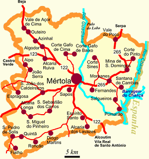
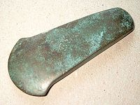
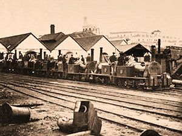
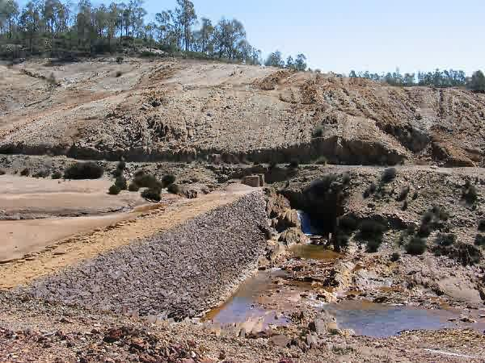
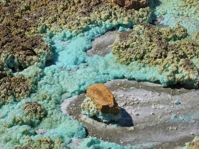
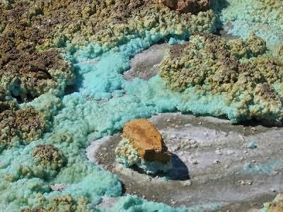
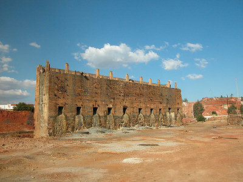
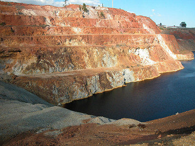

Aguas contaminadas !
Aguas contaminadas !
a) The Copper Age
b) In Roman Times
c) In the 19th Century
a) Landscape and vegetation
b) The water problem
Mina de São Domingos - Mertola - Portugal
|
|
|
|
a) The Copper Age a) Landscape and vegetation |
|
ENJOY YOUR READING!
To read this statement in French, click on this flag:
The mine in São Domingos is located 17 kilometers from the village of Mertola, in the Alentejo region in southern Portugal, in the heart of the Iberian pyrite belt. It has a Mediterranean climate with long hot summers and short winters.
Geologically, the region's ground is made up of shale, a combination of volcanic and sedimentary rocks.
The mine was worked since the Chalcolithic Age (that is the Copper Age), more than 4000 years ago. Unfortunately, it was abandoned in 1966 because the copper reserves were depleted.
Since then, it has caused pollution in vegetation and especially in water ( aguas contaminadas ) that threatens people and animals throughout the entire region.
a) The Copper Age
Archeological digs have found protohistorical tools from the Copper Age (photo n° 1), which prove that the mineral was already mined at that period. Excavation works are attributed to the Carthaginians and the Phoenicians.
b) In Roman Times
The second period of excavation is attributed to the Romans who intensified copper production on a large scale. At first, the main reason that Romans were in this desert area was not for copper but for gold and silver.
Excavation activities lasted for 385 years, from 12 to 397 A.D. Excavation went to a depth of 40 meters. Based on the amount of slag that was found, we calculated that the Romans excavated 750,000 tons of pyrite and copper ore during this period.
c) From the 19th Century
The third and last period of intensive mineral extraction began in 1855. In that year, the Sabina Mining Company obtained a mining claim for 800 km². For economic reasons, it ended in 1966 by the closing of the mine because all usable copper reserves were depleted.
During this period, the mine was worked 24 hours a day by thousands of workers. Extraction was carried out in underground mines and open mines. During the first years, ore was brought to the surface by donkey, later it was transported by mine cars (photo n° 2).
As early as 1858, 236 tons of sulfurous pyrite was excavated. In 1862, 120,000 tons of pyrite were exported to England, which represents nearly half of the country's consumption. The year 1919 was a record year in the history of the São Domingos mine, that year 432,350 tons of ore were excavated. Finally, in 1965, the last complete year of excavation before closing in 1966, 66,823 tons were still excavated. In all, from 1855 to 1966, more than 25 million tons of ore were removed from the ground in the São Domingos region.
a) Landscape and vegetation
Like we said, two types of excavation were used in the São Domingos mine: underground and open. The first caused a creation of a very complex gallery system, each one about 30 meters apart connected by dug passages at a depth that could go to 400 meters. The second, that lasted about fifty years until the end of the 19th century, caused removing more than 3 million meters cube of earth, in an area of about 42,000 m² and up to a depth of 100 meters.

Since 1966, everything was abandoned and the buildings are in ruins (photo n° 3). Several open slag dumps surround many old infrastructures. Waste from the mine is estimated at several hundreds of thousands of tons. They contain ore waste, debris from construction, and especially sediment that comes from runoff from these materials. Due to a high concentration of ore, there are sulfur crystals and various sulfates, including melanterite and jarosite.

This situation is of concern because it creates serious problems for the environment, not only for the landscape and vegetation (photo n° 4) but also for all ecosystems in the region.
b) The water problem
During excavation of the mine, lagoons (photo n° 5) were created to enable slag from the mines to settle.

Since the mine was closed, the water in these lagoons has become very acid, with a pH of 2.4. This acid water, highly concentrated in oxides, is very polluted (photos n° 6 and n° 7). They are very noxious for the earth, of course, but even more dangerous is that they combine with water held by the dam on the nearby Chança River. It must be said that the water from this dam is used for irrigation and consumption! Due to these infiltrations, it has become very dangerous for animals and people.
 

Since the year 2000, the association for the protection of heritage in Mértola and the city council in Mértola analyzed the water to alert the Portuguese government of the dangers of the pollution. Rehabilitation projects for the São Domingos mine have already begun (photo n° 8) and clean-up work is planned for the years to come to remove pollution from the region and to protect the environment.

Here are some pictures of the São Domingos mine taken during the educational trip to Portugal in October 2005:
|
|
|
|
 |
|
|
|
 |
Report by students in Mrs. Lecointre's biology class at the Alco junior high school:
Maïté è class of 4th E
Katell è class of 4thE
Web page designed by the students with the help of Mr. Martinet, math teacher.
There have already been visitors to this page. Thank you very much!!!